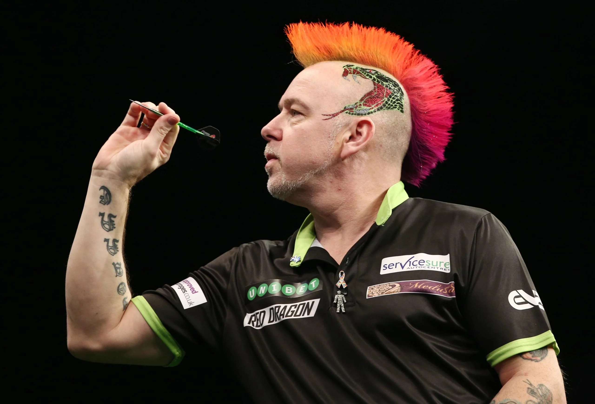
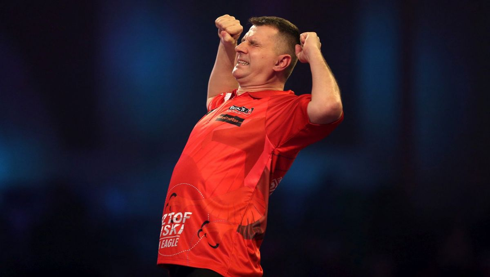
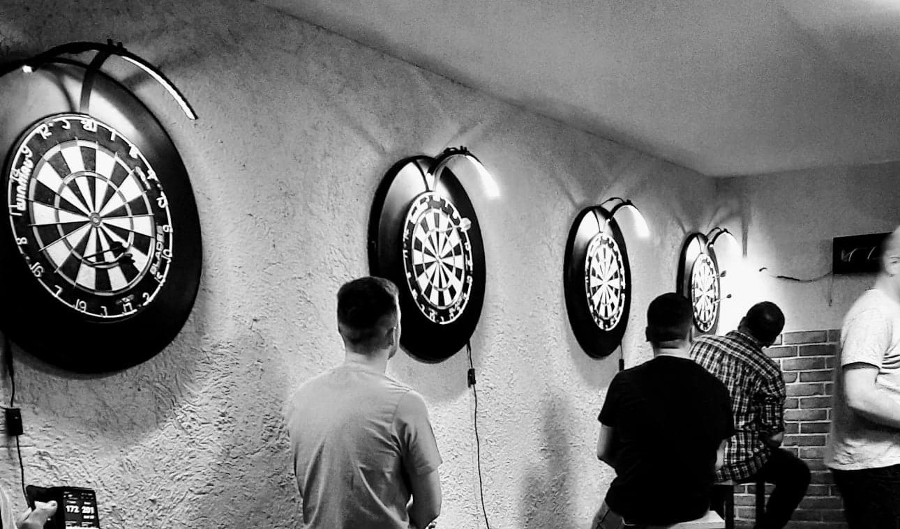
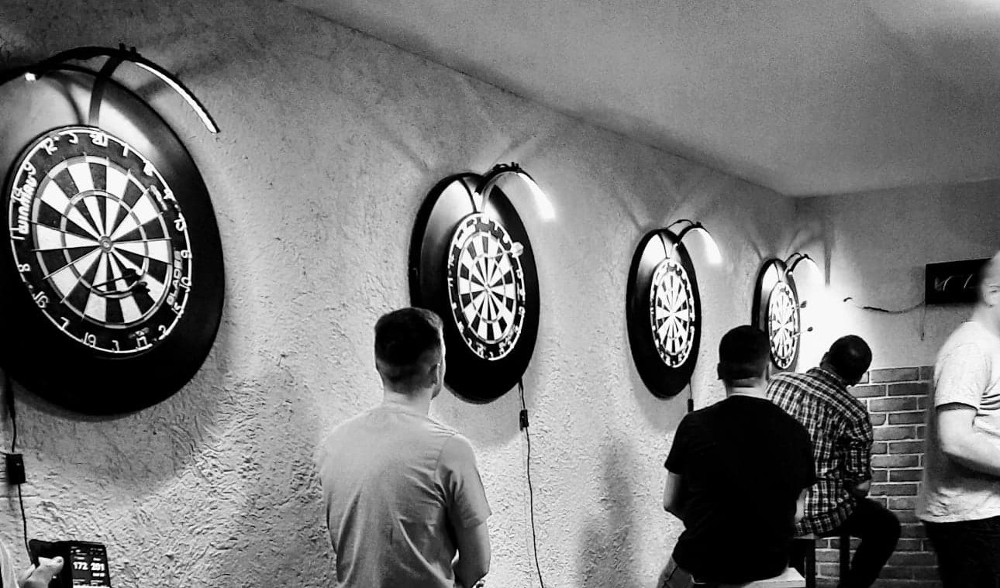

Dart to gra, a raczej różne powiązane ze sobą gry, w których celem jest trafianie niewielkimi lotkami w tarczę zawieszoną na ścianę. Obecnie jednak zasady gry są ustandaryzowane. Mecz rozgrywa między sobą dwójka graczy, która startuje rozgrywkę z 501 punktami. Ten, komu pierwszemu uda się pozbyć wszystkich punktów, zwycięża daną rundę. Liczbę rzuconych punktów trzema lotkami odejmuje się od wyniku i rzuty wykonuje drugi gracz aż do zakończenia danej rundy.
Na tarczy znajdują się pola z wartościami od 1 do 20 oraz dwie środkowe wartości (wewnętrzna jest warta 50 punktów, a zewnętrzna 25). Zielone oraz czerwone prostokąty to strefy z mnożnikami. Ten zewnętrzny, mnoży rzuconą wartość razy dwa, a wewnętrzny razy trzy. Tak więc najwyższą możliwą wartością do rzucenia w jednym rzucie jest 60 punktów. Aby zejść ze swoim poziomem punktów do 0, należy wykonać rzut w pole z mnożnikiem x2 (np. mając 20 punktów celujemy w podwójną 10). Jeśli nasz rzut jest warty więcej niż ilość pozostałych punktów, kończymy daną turę, a liczba punktów pozostaje jaka była przed rzutem.
Dart większość ludzi kojarzy z barową grą, piciem piwa i zabawą. Po części mają oni rację. Jednak należy pamiętać, że dart jest uznaną w Europie dyscypliną sportową (choć nadal nieoficjalną - nie jest to sport olimpijski). Przez cały rok odbywają się liczne turnieje z ogromnymi nagrodami, a tysiące ludzi kibicują swoim zawodnikom zarówno na żywo, jak i przez telewizor.
Najsilniejszymi nacjami w darcie pod względem zawodników są zdecydowanie Anglia, Szkocja, Walia i Holandia, choć Polska też ma swoich reprezentantów, którzy jeżdżą regularnie na największe turnieje. Obecnym mistrzem świata jest Peter Wright - wiekowy już zawodnik ze Szkocji, który znany jest ze swojej interesującej aparycji. To pokazuje, że w Darcie wiek się nie liczy, a doświadczenie jest niezwykle cenne.
Najbardziej znanym polskim zawodnikiem darta jest Krzysztof Ratajski, który często zaskakuje w pojedynkach z najlepszymi graczami na świecie. Obecnie znaduje się on na 19 miejscu w rankingu najlepiej zarabiających graczy w tej dyscyplinie. Dzięki niemu dart zyskał nowych fanów w naszym kraju, po jego świetnym występie na Mistrzostwach Świata PDC 2 lata temu.
 Osobiście jestem wielkim fanem tej dyscypliny i sam uczęszczam na lokalne turnieje. Praktycznie w każdym średnim i większym mieście organizowane są cotygodniowe ligi i turnieje dla graczy darta, gdzie każdy może uczestniczyć w sportowej rywalizacji i spędzić czas ze znajomymi. Przykładem jest Tczewska Liga Darta organizowana stale od kilku lat, która zyskuje coraz więcej graczy, którzy ciągle rozwijają się i tworzą zgraną grupę jeżdżącą na większe turnieje.
 
